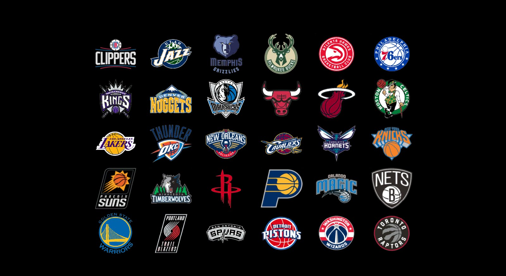

The Toronto Raptors are currently in the first month of their 2017-18 season. Although, during the 2016-17 season they did well. The Raptors had a record of 51:31 (win:loss) ratio, being tied with the Cleveland Cavaliers for the second seed of their conference. As a result of doing good in the season, the Raptors were able to go to the playoffs. Their first opponent, Milwaukee Bucks, were putting up a strong fight. Luckily, the team was able to take out the Bucks by winning 4 games before the opponent. Sadly, the next opponent was the Cleveland Cavaliers. The Cavs swept the Raptors to move on to the NBA Finals. The Raptors did not even get a chance to win a game, the Cavs just won all the four games they needed to win. Luckily, the Raptors were not the worst that season, they were still able to win plenty of games, and keep their ranking high. For a team that is not quite popular in the world, they are definetely a good team. Sadly, the Raptors will probably have some trouble in the 17-18 season. The increase of trades resulted in the making of teams with new players. Some even consisting of more than one strong player, that have lots of skill and experience in the sport. The Raptors on the other hand do not have a lot of strong players. Although, they definetely do have the potential of transforming their players into strong players. Every year changes do happen, and it could go different ways for the Raptors in the future. Maybe something beneficial will happen, and the Raptors could potentially get a championship for the first time.
FOR LATEST STATS AND SCORES OF THE RAPTORS PROGRESS IN THE SEASON.....CLICK THIS LINK!
